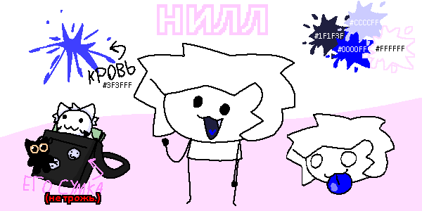

Нилл

референс нилла
вид :: человек
ДР :: 06.02.2010
пол :: мужской
рост :: 138
вес :: 25
инфо
является маскотом соцсетей и моделью автора. впервые появился 23 июля 2022 г., сразу после того, как произошли большие изменения YouTube и Telegram каналов.
как персонаж
нилл добрый и нежный оптимистичный парень. он живёт на острове Котикис и дружит со всеми его жителями. обладает магией воздуха и воды, которой учится под руководством Аэро. несмотря на это, они остаются просто друзьями и проводят вместе немало времени.
Нилл чувствует сильную любовь к Хаос. в одном из официальных видео была показана его привязанность к ней.
он рисует её и проводит вместе с ней много времени.
также, нилл дружит с милитари. когда на остров нападали враги, он работал с ним в одной команде. он был тактиком и медиком.
внешность
нилл показан как чиби-персонаж с тонкими конечностями, маленьким тельцем и большой головой. у него большие черные глаза и рот. волосы у него уложены неаккуратно и беспорядочно.
поскольку кровь его имеет синий цвет, то и ротовая полость и язык обладают синими оттенками.